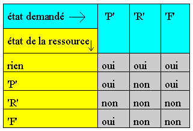

La fonction Hshare est utilisée pour le Partage, la Réservation et la Libération des ressources communes
Ptr = Hshare (tdf , ressource , mode)
Paramètres
Tdf
Table de définition de fichier. Elle doit correspondre à un fichier (local ou distant) ouvert et permet d'indiquer sur quel ordinateur doit se faire l'opération.
Ressource
La ressource est une chaîne de caractères. Si elle commence par un espace, ce dernier est supprimé.
Mode
Le mode indique l'action à effectuer. Il peut prendre une des valeurs suivantes :
- P pour partager,
- R pour réserver,
- F pour réserver en mode forcé,
- L pour libérer.
Le mode 'P' : Partage
Plusieurs programmes peuvent partager la même entité avec le mode 'P'.
Le mode 'R' : Réservé
Le mode 'R' est exclusif. Un programme peut réserver une entité à la condition qu'elle ne soit déjà ni partagée ni réservée.
Le mode 'F' : Forcé
Ce mode permet de réserver une entité même si elle est déjà partagée par d'autres programmes. Un programme peut partager une ressource (mode 'P') puis passer en mode réservé (mode 'F') puis revenir en mode partagé.
La table ci-dessous résume l'instruction SHARE :

Retour
|
0 |
Pas d'erreur. |
|
H_RESERVED |
Erreur de partage. |
|
|
Toutes les autres erreurs provoquent l'arrêt du programme. |
Remarque
En cas d'erreur de partage, la fonction ShareLastError permet de connaître la tâche qui a réservé l'entité.
Réservations par base
Principe : Voir Paramétrage des chemins
Lorsqu’un fichier est ouvert sans utiliser les chemins harmony (c:\divalto\sys) la réservation se fait avec un nom de base à espace.
(ce type d'ouverture ne peut se faire qu'en local, le reseau xlan interdisant l'accès à un fichier sans passer par les chemins harmony).
Pour faire une réservation globale à toutes les bases, il faut la lier à un fichier sous le chemin /divalto.
Attention : Pour que les réservations par base fonctionnent, il est impératif que tous les utilisateurs passent par les mêmes chemins pour ouvrir les fichiers
Exemple 1
Si un fichier contient une clé unique (numéro de client par exemple), il faut s'assurer que deux programmes ne puissent pas créer le même enregistrement.
Pour cela, le programme réserve l'entité " creation-client". Si l'entité est déjà réservée, le programme attend qu'elle se libère.
attention : Il est important de libérer au plus vite l'entité réservée. Tant que l'entité reste réservée, d'autres programmes peuvent se trouver bloqués. C'est pourquoi, dans l'exemple ci-dessous, l'entité est libérée avant l'affichage des messages d'erreur.
.......; saisie des champs de client.
; on réserve une entité afin d'interdire la création
; simultanée par plusieurs programmes
loop Hshare(fcli," creation-client","R")
endloop
; recherche en mode partage
; on lit dans une zone de travail pour ne pas casser la
; saisie
st = Hseek(fcli,wcli,'A' & client.codcli, 'P')
switch st
case H_RECORD_NOT_FOUND ; il n'existe pas -> écriture
; puis libération de l'entité
stw = Hwrite(fcli , client )
Hshare(fcli,"creation-client", "L")
case 0 ; il existe déjà
Hshare(fcli,"creation-client", "L")
MessageBox("Le client " & client.codcli &
"existe déjà"," ")
case H_RESERVED ; erreur de partage
Hshare(fcli,"creation-client","L")
MessageBox("Le client " & client.codcli &
"est réservé"," ")
endswitch
Exemple 2
Dans la comptabilité, nous voulons interdire certains traitements batch sur un compte si une écriture est en cours de saisie sur ce compte.
Le programme de saisie va donc partager le compte, indiquant ainsi qu'il y a une saisie en cours.
Le programme batch va réserver le compte et ne pourra donc être exécuté que s'il n'y a pas de saisie en cours. Pendant l'exécution du programme batch, il n'est pas possible de passer en saisie sur le compte réservé.
|
Saisie |
Batch |
|
st = Hshare(tdf,compte,"P") |
st = Hshare(tdf,compte,"R") |
|
if st = H_RESERVED |
if st = H_RESERVED |
|
MessageBox("compte réservé"," ") |
MessageBox("compte réservé"," ") |
|
abort |
abort |
|
endif |
endif |
|
.... saisie de la pièce .... |
...traitement du compte .... |
|
Hshare(tdf,compte,"L") |
Hshare(tdf,compte,"L") |
Exemple 3
Cet exemple illustre à partir de l'exemple précédent l'utilisation du mode forcé.
A l'intérieur du programme de saisie, une mise à jour du solde du compte doit avoir lieu. Cette opération doit être mise en exclusion mutuelle pour que deux programmes ne le fasse pas en même temps.
Pour mettre le solde à jour, le programme doit alors réserver (pendant un temps très court) l'entité en utilisant le mode forcé.
st = Hshare(tdf,compte,"P")
if st = H_RESERVED
MessageBox("compte réservé"," ")
abort
endif
.... saisie de la pièce ....
loop Hshare(tdf,compte,"F") ; passe en mode forcé
endloop
.... mise à jour du solde ....
; Attention ! pas d'entrée clavier entre la réservation et la
; libération
Hshare(tdf,compte,"L") ; libération
; on pourrait également revenir en mode partagé
Voir